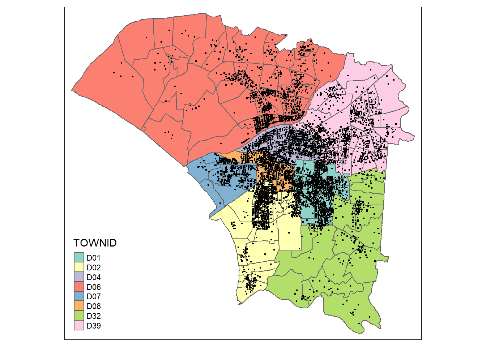
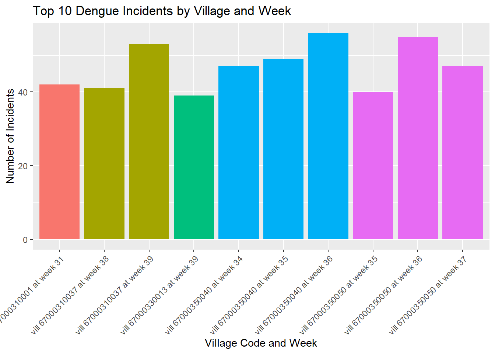

pacman::p_load(sf, tidyverse, tmap, sfdep)Take-home Exercise 2: Application of Spatial and Spatio-temporal Analysis Methods to Discover the Distribution of Dengue Fever in Tainan City, Taiwan
1. Background & Context
In this take home exercise, our central subject of study would be Dengue.
1.1 What is Dengue?
Dengue is a disease spread by mosquitoes, particularly, the female Aedes aegypti and Aedes albopictus mosquitoes, in tropical and subtropical regions like Taiwan. It is transmitted to humans through the bite of the aforementioned mosquitoes. When a mosquito bites a dengue-infected person, the mosquito is then infected. After approximately one week, the mosquito can then transmit the virus to other people they bite. It can result in sudden high fever, severe headache, joint pains and skin rashes.
1.2 Why Study It?
It can easily spread in areas in Taiwan due to the tropical climate, the high population density and numerous pools of stagnant water - which is a loved breeding ground for mosquitoes. It is imperative to track the speed at which it spreads and the areas in which it can spread in order to curtail its spread. And thats what we will be doing in this take home exercise.
1.3 What in particular are we investigating?
- We firstly want to know if the outbreaks in Taiwan are independent of space and time. That means that the dengue instances would be randomly distributed and not show any pattern
- If they are not independent of space and time, we would want to find certain areas that have high incidents of dengue (hotspots) and low incidents of it (coldspots). We also want to find if there are certain times of the year when outbreaks are more common.
2. Packages
In this section, I will be installing and loading R packages into our R environment to use them. I will also explain the utility of each package.
Sf
It provides a comprehensive and standardized way to represent and manipulate spatial data.
- Allows you to represent points, lines and polygons
- Allows you to represent data using coordinate reference system, and transform data using that.
tidyverse
Imagine you have a bunch of dirty data that you woul have to handle. The Tidyverse package helps you handle the data. It has a bunch of packages within it to help handle data. It can do the following:
readr - reading and writing data into or out of a spreadsheet
tidyr - organizing and tidying up your data
ggplot2 - visualizing your data
dpylr - mainpulating your data, like doing some basic math to it.
tmap
Shows distribution of a characteristic across a geographic space.
sfdep
3. Data
3.1 Data Download & Import
Let us first look at the data we are utilising to conduct this analysis.
| Data Name | Description | Type | Format |
| Dengue Daily | This data denotes the locations and time of each dengue incident in Taiwan. | Geospatial | CSV |
| Historical map data of the village boundary (TWD97 longitude and latitude) | This data provides the internal and external boundary of Taiwan at the village level. | Geospatial | ESRI shapefile |
3.2 Geospatial Data
In this section, we will be importing and wrangling our data. We do this because data might not always be in the format that is suitable for our analysis, and hence, conversion to a suitable format is imperative.
3.2.1 Import the data
taiwan <- st_read(dsn = "data/geospatial",
layer = "TAINAN_VILLAGE")Reading layer `TAINAN_VILLAGE' from data source
`C:\shaysnutss\IS1455-GAA\Take-Home_Ex\Take-Home_Ex02\data\geospatial'
using driver `ESRI Shapefile'
Simple feature collection with 649 features and 10 fields
Geometry type: POLYGON
Dimension: XY
Bounding box: xmin: 120.0269 ymin: 22.88751 xmax: 120.6563 ymax: 23.41374
Geodetic CRS: TWD97Let’s look at the data to understand it better.
head(taiwan)Simple feature collection with 6 features and 10 fields
Geometry type: POLYGON
Dimension: XY
Bounding box: xmin: 120.053 ymin: 22.93251 xmax: 120.2905 ymax: 23.16919
Geodetic CRS: TWD97
VILLCODE COUNTYNAME TOWNNAME VILLNAME VILLENG COUNTYID COUNTYCODE
1 67000280002 臺南市 歸仁區 六甲里 Liujia Vil. D 67000
2 67000350032 臺南市 安南區 青草里 Qingcao Vil. D 67000
3 67000150009 臺南市 七股區 溪南里 Xinan Vil. D 67000
4 67000150010 臺南市 七股區 七股里 Qigu Vil. D 67000
5 67000150008 臺南市 七股區 龍山里 Longshan Vil. D 67000
6 67000150017 臺南市 七股區 中寮里 Zhongliao Vil. D 67000
TOWNID TOWNCODE NOTE geometry
1 D33 67000280 <NA> POLYGON ((120.2725 22.95868...
2 D06 67000350 <NA> POLYGON ((120.1176 23.08387...
3 D22 67000150 <NA> POLYGON ((120.121 23.1355, ...
4 D22 67000150 <NA> POLYGON ((120.1312 23.1371,...
5 D22 67000150 <NA> POLYGON ((120.0845 23.13503...
6 D22 67000150 <NA> POLYGON ((120.126 23.16917,...class(taiwan)[1] "sf" "data.frame"We can see that the data is in a data frame of type sf. This data frame talks about each village in Tainan city (in Taiwan), and accompanying information like which county and town the village is in.
Let’s see how Tainan city in Taiwan looks like when it is divided by its villages. In this plot below, we see Taiwan divided by villages, and each color represents a different town that it is part of.
tmap_mode("plot")
qtm(taiwan, fill="TOWNID")
However, we only need towns D01, D02, D04, D06, D07, D08, D32 and D39.
3.2.2 Data Filtering
Let’s now filter the rows in our Taiwan data frame to contain rows/villages from just these particular towns: D01, D02, D04, D06, D07, D08, D32 and D39.
taiwan_filtered <- taiwan %>%
filter(TOWNID %in% c('D01', 'D02', 'D04', 'D06', 'D07', 'D08', 'D32', 'D39'))Let’s visualise the data again.
tmap_mode("plot")
qtm(taiwan_filtered, fill="TOWNID")
Here we see that we were successful in our filtering, we have got the villages just in the towns that we are interested in. This is a much smaller subset of the data we were working with, hopefully processing speeds would be higher too!
3.2.3 Assessing Geometric Validity
length(which(st_is_valid(taiwan_filtered) == FALSE))[1] 00 means that none of our rows have invalid geometries and that we could move on peacefully.
3.2.4 Missing values
We want to check if there are any empty rows. Datasets can be huge and consequently, we could have many empty rows that is just a waste of memory and processing power. Removing them would be useful.
Here’s how we do it:
# Use the filter function to check for empty rows
empty_rows <- taiwan_filtered %>%
filter_all(all_vars(is.na(.)))
# Check if there are any empty rows
if (nrow(empty_rows) > 0) {
cat("There are empty rows in the sf data tibble.\n")
} else {
cat("There are no empty rows in the sf data tibble.\n")
}There are no empty rows in the sf data tibble.Luckily, we have no empty rows either!
3.2.5 Coordinate reference system
st_crs(taiwan_filtered)Coordinate Reference System:
User input: TWD97
wkt:
GEOGCRS["TWD97",
DATUM["Taiwan Datum 1997",
ELLIPSOID["GRS 1980",6378137,298.257222101,
LENGTHUNIT["metre",1]]],
PRIMEM["Greenwich",0,
ANGLEUNIT["degree",0.0174532925199433]],
CS[ellipsoidal,2],
AXIS["geodetic latitude (Lat)",north,
ORDER[1],
ANGLEUNIT["degree",0.0174532925199433]],
AXIS["geodetic longitude (Lon)",east,
ORDER[2],
ANGLEUNIT["degree",0.0174532925199433]],
USAGE[
SCOPE["Horizontal component of 3D system."],
AREA["Taiwan, Republic of China - onshore and offshore - Taiwan Island, Penghu (Pescadores) Islands."],
BBOX[17.36,114.32,26.96,123.61]],
ID["EPSG",3824]]3.3 Aspatial Data
3.3.1 Import the data
Let’s import the data.
dengue <- read.csv("data/aspatial/Dengue_Daily.csv")Let’s explore how the data is like!
head(dengue) 發病日 個案研判日 通報日 性別 年齡層 居住縣市 居住鄉鎮 居住村里
1 1998/01/02 None 1998/01/07 男 40-44 屏東縣 屏東市 None
2 1998/01/03 None 1998/01/14 男 30-34 屏東縣 東港鎮 None
3 1998/01/13 None 1998/02/18 男 55-59 宜蘭縣 宜蘭市 None
4 1998/01/15 None 1998/01/23 男 35-39 高雄市 苓雅區 None
5 1998/01/20 None 1998/02/04 男 55-59 宜蘭縣 五結鄉 None
6 1998/01/22 None 1998/02/19 男 20-24 桃園市 蘆竹區 None
最小統計區 最小統計區中心點X 最小統計區中心點Y 一級統計區 二級統計區
1 A1320-0136-00 120.505898941 22.464206650 A1320-04-008 A1320-04
2 A1303-0150-00 120.453657460 22.466338948 A1303-09-007 A1303-09
3 A0201-0449-00 121.751433765 24.749214667 A0201-23-006 A0201-23
4 A6408-0153-00 120.338158907 22.630316700 A6408-10-010 A6408-10
5 A0209-0232-00 121.798235373 24.684507639 A0209-10-005 A0209-10
6 None None None None None
感染縣市 感染鄉鎮 感染村里 是否境外移入 感染國家 確定病例數 居住村里代碼
1 None None None 否 None 1 None
2 None None None 是 None 1 None
3 None None None 是 None 1 None
4 None None None 否 None 1 None
5 None None None 否 None 1 None
6 None None None 是 None 1 None
感染村里代碼 血清型 內政部居住縣市代碼 內政部居住鄉鎮代碼 內政部感染縣市代碼
1 None None 10013 1001301 None
2 None 第二型 10013 1001303 None
3 None None 10002 1000201 None
4 None None 64 6400800 None
5 None None 10002 1000209 None
6 None None 68 6800500 None
內政部感染鄉鎮代碼
1 None
2 None
3 None
4 None
5 None
6 NoneWe realise that the columns are in Chinese, so let’s translate them to english so that we can understand them better. I have used Google translate to individually translate each column to english
new_names <- c("Onset_date", "judgement_date", "notification_date", "gender", "age_group", "country_city_residence", "residential_township", "residential_village", "min_stat_area", "min_stat_area_center_point_x", "min_stat_area_center_point_y", "first_level_stat_area", "second_level_stat_area", "infected_counties_cities", "infected_towns", "infected_villages",
"immigrant", "country_of_infection", "confirmed_cases_number", "village_residence_code", "infected_village_code", "serotype", "interior_county_city_ministry_code", "interior_residence_township_ministry_code", "interior_infection_county_ministry_code",
"interior_infection_township_ministry_code"
)names(dengue) <- new_namesLet’s check if the translation has worked!
names(dengue) [1] "Onset_date"
[2] "judgement_date"
[3] "notification_date"
[4] "gender"
[5] "age_group"
[6] "country_city_residence"
[7] "residential_township"
[8] "residential_village"
[9] "min_stat_area"
[10] "min_stat_area_center_point_x"
[11] "min_stat_area_center_point_y"
[12] "first_level_stat_area"
[13] "second_level_stat_area"
[14] "infected_counties_cities"
[15] "infected_towns"
[16] "infected_villages"
[17] "immigrant"
[18] "country_of_infection"
[19] "confirmed_cases_number"
[20] "village_residence_code"
[21] "infected_village_code"
[22] "serotype"
[23] "interior_county_city_ministry_code"
[24] "interior_residence_township_ministry_code"
[25] "interior_infection_county_ministry_code"
[26] "interior_infection_township_ministry_code"3.3.2 Conversion of data types
The data type of all the fields in the data table is char, which doesn’t make sense for numeric values such as the x&y coordinates and the onset date.
Let’s change the data type of onset date.
In this code snippet, we convert onset date to a date datatype (it was char before). Then we create a new week column to detect the week of the onset date (we need it later to extract relevant weeks)
dengue_new <- dengue
dengue_new$Onset_date <- as.Date(dengue_new$Onset_date)
dengue_new$week <- as.numeric(format(dengue_new$Onset_date, "%V"))Let’s convert data type of X and Y coordinates.
However, I have noticed that some x and y coordinates are non numerical like “none” , and these will not be able to be converted. lets remove them first.
dengue_new <- dengue_new %>%
filter(grepl("^[+-]?[0-9]*[.]?[0-9]+$", min_stat_area_center_point_x))dengue_new <- dengue_new %>%
filter(grepl("^[+-]?[0-9]*[.]?[0-9]+$", min_stat_area_center_point_y))Now let’s do the conversion.
dengue_new$min_stat_area_center_point_x <- as.numeric(dengue_new$min_stat_area_center_point_x)
dengue_new$min_stat_area_center_point_y <- as.numeric(dengue_new$min_stat_area_center_point_y)3.3.3 Check Missing Data
dengue[rowSums(is.na(dengue))!=0,] [1] Onset_date
[2] judgement_date
[3] notification_date
[4] gender
[5] age_group
[6] country_city_residence
[7] residential_township
[8] residential_village
[9] min_stat_area
[10] min_stat_area_center_point_x
[11] min_stat_area_center_point_y
[12] first_level_stat_area
[13] second_level_stat_area
[14] infected_counties_cities
[15] infected_towns
[16] infected_villages
[17] immigrant
[18] country_of_infection
[19] confirmed_cases_number
[20] village_residence_code
[21] infected_village_code
[22] serotype
[23] interior_county_city_ministry_code
[24] interior_residence_township_ministry_code
[25] interior_infection_county_ministry_code
[26] interior_infection_township_ministry_code
<0 rows> (or 0-length row.names)Thankfully we have no missing data! Let’s proceed.
dengue_before_geo <- dengue_new3.3.4 Conversion of Lat/Long into Geometry
We want to convert the lat long to a point so that we could conduct spatial point analysis!
Now, let’s do the conversion!
dengue_new <- st_as_sf(dengue_new, coords = c("min_stat_area_center_point_x", "min_stat_area_center_point_y"), crs = 3824)Let’s look at our dengue_new now. it’s indeed projected in TWD97 and that’s what we wanted!
st_geometry(dengue_new)Geometry set for 106081 features
Geometry type: POINT
Dimension: XY
Bounding box: xmin: 118.3081 ymin: 21.92574 xmax: 121.9826 ymax: 26.15617
Geodetic CRS: TWD97
First 5 geometries:3.3.5 Extracting dengue cases from relevant weeks
We are asked to extract dengue cases from only week 31 to week 50 of 2023. We do not need data from other time periods. So, let’s do that!
dengue_new <- dengue_new %>% filter(year(Onset_date) == 2023
& (week >=31 & week <= 50))
dengue_before_geo <- dengue_before_geo %>% filter(year(Onset_date) == 2023
& (week >=31 & week <= 50))3.3.6 Extracting dengue data in specific areas
Our geospatial data, taiwan_filtered, provides the boundaries of villages in Tainan City in particular - not the whole of taiwan. And we had taiwan_``filtered created after selecting only a few towns in Tainan City. We need to make sure that the dengue_new data only corresponds to the areas defined in the taiwan_``filtered area.
dengue_tainan <- st_intersection(taiwan_filtered, dengue_new)tm_shape(taiwan_filtered) +
tm_polygons("TOWNID") +
tm_shape(dengue_tainan) +
tm_dots()
3.3.7 Examining dengue incidents /town
By looking at our graphical analysis, we can tell that villages in Towns. D01, D08, D04 have a high density of dengue cases.
Let’s see if that is right by plotting the number of dengue incidents per TOWNID!
dengue_summary <- dengue_tainan %>%
group_by(TOWNID) %>%
summarise(incidents = n(), .groups = 'drop')Let’s plot the results!
ggplot(dengue_summary, aes(x = reorder(TOWNID, -incidents), y = incidents)) +
geom_bar(stat = "identity", fill = "skyblue", color = "black") +
labs(x = "Town ID", y = "Number of Incidents", title = "Dengue Incidents by Town") +
theme_minimal() +
theme(axis.text.x = element_text(angle = 65, hjust = 1))
Guess we weren’t fully correct! The towns with the more incidents were D01, D06 and D39. But it is important to note that the top 5 towns have very similar number of incidents
3.3.8 Examining dengue /village
Now, let’s examine the number of incidents per village. And since we already examined the number of incidents per town, let’s see if the villages with the highest number of incidents come from towns with the highest number of incidents!
Note
This is very important to do so, so that we can make links between different facets of data - villages and towns and gain a better understanding of the geospatial distribution of the incidents.
In this section, not only are we aiming to find the villages with the highest number of incidents, we are trying to link them to the town they are from.
As our first task, let’s map the villages to their town on our own.
3.3.8.1 Mapping town to village
In our dengue_tainan data frame, each row corresponds to a particular incident of dengue in a particular point. There might be multiple points referring to the same village.
We need to remove the geometry column for this so that we can remove the uniqueness for each row and can group all the same village ids together. To do so, we change the data type of dengue_tainan and store it in dengue_tainan_no_geom.
dengue_tainan_no_geom <- st_set_geometry(dengue_tainan, NULL)Now let’s do the mapping between villagecode and townid.
villcode_townid_mapping <- dengue_tainan_no_geom %>%
select(VILLCODE, TOWNID) %>%
distinct()
head(villcode_townid_mapping) VILLCODE TOWNID
212 67000310004 D39
27 67000320003 D01
19 67000310001 D39
128 67000270012 D32
246 67000310025 D39
150 67000310037 D39We have done it!
3.3.8.1 Calculating top 10 villages
Here we group by villcode so that we can get the number of incidents per village
dengue_summary <- dengue_tainan %>%
group_by(VILLCODE) %>%
summarise(incidents = n(), .groups = 'drop')Let’s remove the geometry column here as well so that we can join it with the mapping we made above. We do this because we use left_join for combining the mapping with the number of incidents per village, and it does not allow us to have a geometry column
dengue_summary <- st_set_geometry(dengue_summary , NULL)Now let’s do the join.
dengue_summary <- dengue_summary %>%
left_join(villcode_townid_mapping, by = "VILLCODE")Let’s now get the top 10 villages with the most number of incidents
top_10_villages <- dengue_summary %>%
arrange(desc(incidents)) %>%
slice_max(order_by = incidents, n = 10)Here, let’s plot the number of incidents for the top 10 villages with the most incidents, in an ascending order. Each village will be uniquely colored based on the town it is from, so that we can make connections between the towns and villages with the most incidents.
ggplot(top_10_villages, aes(x = reorder(VILLCODE, -incidents), y = incidents, fill = as.factor(TOWNID))) +
geom_bar(stat = "identity", position = "dodge") +
scale_fill_viridis_d() +
labs(title = "Top 10 Villages with Most Dengue Incidents",
x = "Village Code",
y = "Number of Incidents",
fill = "Town ID") +
theme_minimal() +
theme(axis.text.x = element_text(angle = 45, hjust = 1), # Improve x-axis label readability
legend.position = "bottom") # Adjust legend position
To analyse the graph above, let’s refer to our previous chart depicting the towns with the most incidents.

From the first graph, we can see that the village with the most incidents is from D39, however, D39 isactually the town with the 3rd most number of incidents.
But if D39 is a town with the 3rd most number of incidents, it is actually corroborated by the fact that in the first graph, 3 of the top 10 villages with the most incidents come from D39
From the second graph, we can see that D06 is the town with the second most number of incidents, 4 of the top 10 villages with most incidents actually come from town D06, thus making the second graph make a lot of sense!
What the interesting or controversial thing is, is that, D01 is said to be the town with the most number of incidents, but only one village from town D01 made it to the top 10 list! HMmm.. That means that multiple villages in D01 had a smaller number of incidents, whilst D36 maybe just had a select few villages with high number of cases.
3.3.9 Examining dengue /village/week
Let us now see how many dengue incidents are there per week per village!
Let’s group by the week and the village code, and then add it up to calculate the total number of incidents
dengue_summary <- dengue_tainan %>%
group_by(VILLCODE, week) %>%
summarise(incidents = n(), .groups = 'drop')head(dengue_summary)Simple feature collection with 6 features and 3 fields
Geometry type: GEOMETRY
Dimension: XY
Bounding box: xmin: 120.2534 ymin: 22.98918 xmax: 120.2721 ymax: 22.994
Geodetic CRS: TWD97
# A tibble: 6 × 4
VILLCODE week incidents geometry
<chr> <dbl> <int> <GEOMETRY [°]>
1 67000270001 33 1 POINT (120.2583 22.99218)
2 67000270001 34 1 POINT (120.2612 22.99222)
3 67000270001 35 2 MULTIPOINT ((120.2625 22.994), (120.2668 22.98918…
4 67000270001 36 3 MULTIPOINT ((120.2555 22.99274), (120.2574 22.989…
5 67000270001 37 5 MULTIPOINT ((120.2555 22.99274), (120.2591 22.992…
6 67000270001 38 4 MULTIPOINT ((120.2534 22.99117), (120.2639 22.991…There are many rows in this data table, so let’s find out the particular weeks in specific villages that had the highest number of incidents.
In this code snippet, we get sort the incident values in a descending order, then take the top 10 rows, and change the columns.
top_10_incidents <- dengue_summary %>%
arrange(desc(incidents)) %>%
slice_max(order_by = incidents, n = 10) %>%
mutate(concatenated_vill_week = paste("vill", VILLCODE, "at week", week))Let’s plot it to see which weeks and villages had the most incidents
ggplot(top_10_incidents, aes(x = concatenated_vill_week, y = incidents, fill = VILLCODE)) +
geom_bar(stat = "identity", show.legend = FALSE) +
labs(x = "Village Code and Week", y = "Number of Incidents", title = "Top 10 Dengue Incidents by Village and Week") +
theme(axis.text.x = element_text(angle = 45, hjust = 1, vjust = 1)) 
I’ll be deleting some variables to free some space
rm(top_10_villages)rm(villcode_townid_mapping)Let’s keep the data frame that stores the number of incidents per village per week
dengue_summary <- dengue_tainan %>%
group_by(VILLCODE, week) %>%
summarise(incidents = n(), .groups = 'drop')class(taiwan_filtered)[1] "sf" "data.frame"Let’s left join this data set with all matching rows from the taiwan_filtered dataset based on the villcode column
dengue_week_village <- dengue_before_geo %>%
group_by(residential_village,week) %>%
summarise(incidents = n(), .groups = 'drop')I see a lot of null values so remove that
dengue_week_village <- dengue_week_village %>%
filter(residential_village != "None")The common column would be resdiential_village in dengue_week_village and VILLNAME in taiwan_filtered.
So, let’s rename residential_village to VILLNAME in dengue_week_village.
dengue_week_village <- dengue_week_village %>%
rename(`VILLNAME` = residential_village
)complete1 <- left_join(taiwan_filtered, dengue_week_village, by = "VILLNAME")num_unique_villcode <- n_distinct(complete1$VILLCODE)
num_unique_villname <- n_distinct(complete1$VILLNAME)villeng_unique_villcode <- complete1 %>%
group_by(VILLENG) %>%
summarise(unique_villcode_count = n_distinct(VILLCODE), .groups = 'drop') %>%
filter(unique_villcode_count > 1)